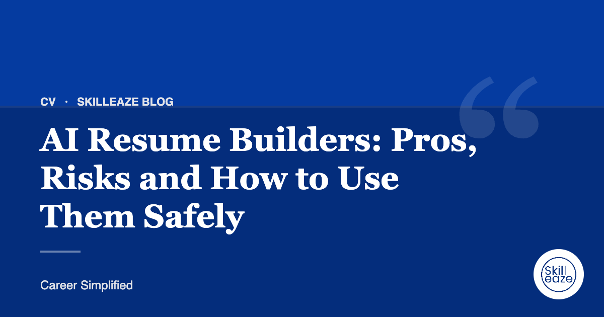

AI Resume Builders: Pros, Risks and How to Use Them Safely
What AI tools are good at, where they go wrong, and how to keep your CV accurate.

What AI does well
AI can suggest wording, fix grammar and produce a first draft quickly.
Where it goes wrong
AI tools can invent achievements, use generic phrases and miss what makes you different. Recruiters notice.
Our team writes your ATS CV from your real experience. INR 490 · AED 20 · USD 6 (50% off).
Accuracy is your responsibility
Every claim on your CV should be true and explainable in an interview.
Use AI as a helper
Draft with AI if you like, then edit heavily with your real experience and target role in mind.
When to get human help
For important applications, career changes or international moves, a professional review catches what AI misses.
Frequently asked questions
Is it okay to use AI to write my CV?
Yes, as a drafting helper. AI can suggest structure and wording, but you must check every claim, remove generic phrases and make sure the content reflects your real experience. You are responsible for what you submit.
Can recruiters tell if a CV was written by AI?
Often they can, because AI text tends to be generic and full of similar buzzwords. Specific details, real numbers and your own voice make your CV credible, whichever tools you used to draft it.
Is it safe to paste my CV into AI tools?
Be careful with personal data. Remove your phone number, address and other sensitive details before pasting, and check the tool's privacy policy. Avoid sharing confidential information about current or former employers.
General guidance only. Employer requirements vary; always follow the job advert.
 Chat on WhatsApp
Chat on WhatsApp